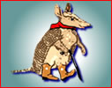

Front-end style guide for the theme's developer — colors, type, components and page templates for a community events calendar and blog. Built on the Organic design system, tuned to the logo (Desert Warm palette).
Accent (shell brown, from the armadillo's coat) carries primary actions and links. Accent-2 (collar red) is a pop color for a small number of high-emphasis moments — "Submit an event," featured-event badges — not a second full UI voice.
--color-accent-*, --color-accent-2-*). Accent = #8a5a34, Accent-2 = #b83f2e. Body text and accent-on-tint text must sit on the 700–900 steps for AA contrast on this cream ground.Caprasimo for headings, Figtree for body — loaded via --font-heading / --font-body.
Primary for the main call to action per page (Submit Event, RSVP). Tag-accent-2 flags a featured or time-sensitive event.
For the event-submission and blog-comment forms.
One card layout per content type — Calendar Event, Blog Post, Location.
Bring a broken lamp, a torn jacket, or a bike that needs a tune-up.
FeaturedA field note from three years of running community repair events across East Austin.
2200 Springdale Rd · wheelchair accessible · 40 events hosted here.
Simple horizontal bar — logo mark left, primary links, Submit Event as the standing CTA.
| Date | Event | Location | Tag |
|---|---|---|---|
| Aug 14 | Repair Café at Springdale | East Austin | Featured |
| Aug 16 | Community garden workday | South Congress | Community |
| Aug 21 | Mutual aid food distribution | North Loop | Recurring |
Wireframes mapped to Drupal regions — for the front page, blog post, calendar event and location page templates.
| Drupal region | Maps to |
|---|---|
| Header | Site branding block (logo, 32px) + main menu (Calendar, Blog, Locations, About) + Submit-event CTA button |
| Highlighted | Front-page-only hero block with the large logo mark and standfirst copy |
| Content | View output — event grid on the front page, node body on Article/Event/Location pages |
| Sidebar first | Event meta card (date, time, location) on Calendar Event nodes; empty elsewhere |
| Footer | Secondary links + copyright, on neutral-100 |
tag-accent-2); Calendar is a View over Calendar-event nodes (month grid + list toggle), styled with the .table rules above for the list mode.
--radius-* / --space-* / --shadow-* tokens already in styles.css — only the two accent ramps above are new.